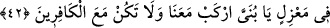

42. Gemi dağlar gibi dalgalar arasında onları götürürken Nuh uzakta duran
oğluna: “Yavrucuğum, bizimle beraber bin, kâfirlerle beraber olma.” diye seslendi.
Onlar da Allah’ın adını anarak gemiye bindiler. “Gemi dağlar gibi dalgalar” tufan
dalgaları “arasında onları götürürken” yani mü’minler gemide oldukları halde.
, burada yoğun yağmurda olduğu gibi her şeyin çok ve topluluğu kuşatanına denir.
“
”nin çoğulu olan “
(dalgalar)”, şiddetli rüzgar sebebiyle yükselen su
mânâsınadır.
Âyette her dalga, büyüklüğü, suya göre yüksekliği ve kesâfeti bakımından dağa
benzetilmiştir. Bu benzetmenin zâhirinden geminin dalgaların içinde yüzdüğü
anlaşılmaktadır. Oysa kasdedilen şudur: Dalgalar gemiyi her yanından çepeçevre
sardığı için gemi dalgaların içinde giden bir şeye benzetilmiştir.
Eğer: “Su, yer ile gök arasını doldurduğuna göre bir dalgadan bahsedilemez. Öyleyse
geminin dalgalar arasında yüzmesinin mânâsı nedir?” diyecek olursan, şöyle cevap
veririm: Bu yüzme, tufan dağları kaplamadan önce meydana gelmiştir. Bazı âlimlerin
dediği gibi gemi, balıklar gibi denizin içinde de yüzebilir. Boğulma da gerçekleşmez.
Çünkü Allah Teâlâ suyun gemiye girmesini engellemeye kadirdir. Nitekim denizde bir
yol tutup giden balığın durumu (el-Kehf, 18/61) ortadadır. Yâni balık nereye gitse su
yukarı gelir ve yükselirdi. Harikulade olaylar arasında Musa (a.s.) ve kavmi için
denizin yarılması, Allah Teâlâ’nın suda birkaç tane geçit açması da bunun gibidir.
“Nuh uzakta duran oğluna:” Aşırı şefkatinden dolayı “Yavrucuğum, bizimle beraber
bin,” yani ey oğulcuğum gemiye bizimle beraber bin ki emniyette olasın, “kâfirlerle
beraber olma.” diye seslendi.”
“
/ uzakta duran” el-Kevâşî’de belirtildiği üzere kâfir olduğu için Nuh
(a.s.)’ın bulunduğu mekandan da onun dininden de uzak duran demektir. el-İrşâd’da ise
şöyle denilir: Yâni “Gemiye binin!” hitabını duyamayacak kadar babasından,
kardeşlerinden ve kavminden kendini uzak tuttuğu bir yerde olan, demektir.
Nuh (a.s.)’ın bu oğlunun adının Ken’an veya Yâm olduğu söylenir. Onun Nuh (a.s.)’ın
evladlığı mı yoksa öz oğlu mu olduğu da ihtilaflıdır. Rüsûm (zâhir) ulemasının çoğu,
birinci görüştedir. Çünkü mâsum bir peygamberin çocuğunun kâfir olması uzak bir
ihtimaldir. Ayrıca Hz. Ali (r.a.) âyetteki “ ” kelimesini “
” şeklinde okumuştur. O
zaman zamir, Nuh (a.s.)’ın hanımı Vâile ya da et-Tibyân’da geçtiği üzere Valia’ya
râcîdir. O zaman mânâ “Vâile’nin oğluna” şeklinde olur. Yine Nuh (a.s.)’ın: “Şüphesiz